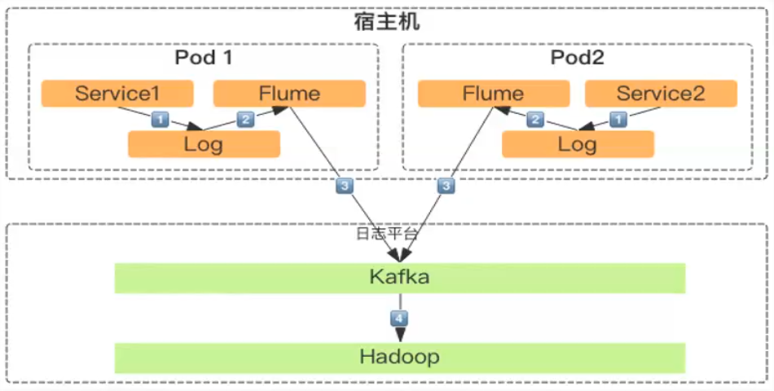
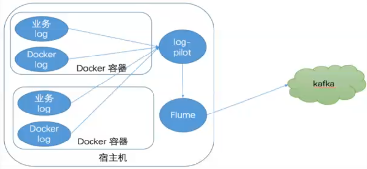
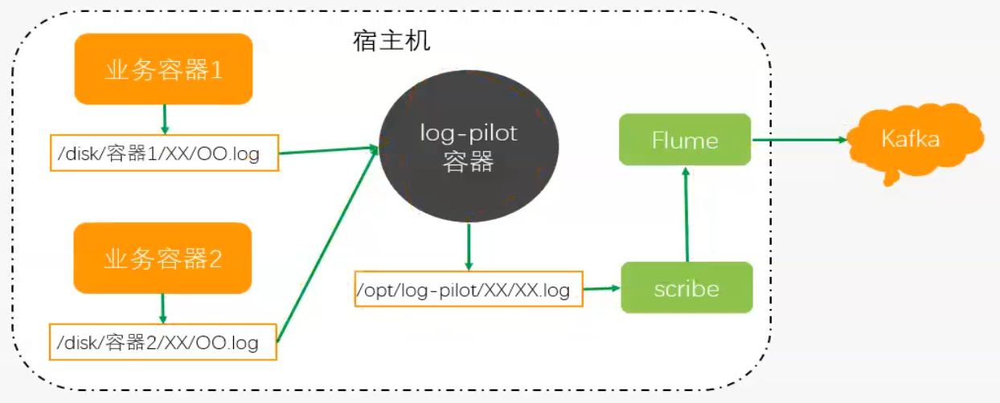

容器日志收集
如何保证容器内日志不丢。
方案一：应用和Flume部署在同一Pod

正常情况下应用打印一条日志，Flume采集一条，不会出问题，但可能存在阻塞的情况，Flume采集暂时没有跟上日志的打印速度。这个时候容器pod关闭时，没来得及的采集的日志会丢失。
方案二：日志实时采集落到宿主机+Flume采集宿主机日志

log-pilot独立容器，阿里开源，支持增量采集/断点续传。
日志如何产生及存储：容器内的业务程序通过日志插件（如Log4j2）将日志输出到容器内某个目录，容器的目录是挂载在宿主机某个磁盘。
日志采集面临的问题：容器目录挂载在宿主磁盘的目录是根据容器信息生成的，而不是根据业务生成的，则无法提前知道应该去哪个目录采集日志。
log-pilot
log-pilot是阿里云开源的一款实时采集容器日志的工具，其本身也是一个容器，是通过容器之间的通信来监听宿主机上其它容器的事件动态，log-polit容器内会启动一个采集程序（目前支持Fluentd和Filebeat），监听到其它容器的状态后，根据Docker的API拿到该容器的信息，拼接出容器Log所在的目录，由采集程序去采集。
log-pilot和业务日志对接，采用的是evn变量设置
方式一：Docker启动通过命令行设置env环境变量方式
Tomcat设置env环境变量
docker run --it --rm --p 20020:2020 --v /opt/tomcat/log --label
alyun.logs.catalina=stdout --label
aliyun.log.access=/opt/tomcat/log/localhost_access.log.* tomcat
方式二：Kubernates启动设置env环境变量
-name: aliyun.logs.access
value: /opt/tomcat/log/localhost\_access.log
log-pilot监控start，stop，destory等事件
日志放在
/host/opt/data/kubelet/pods/xxxxxxx/opt/tomcat/log/localhost_access.log
/opt/log-pilot/logs/tomcat-xxxxxxxxx/localhost_access.log
